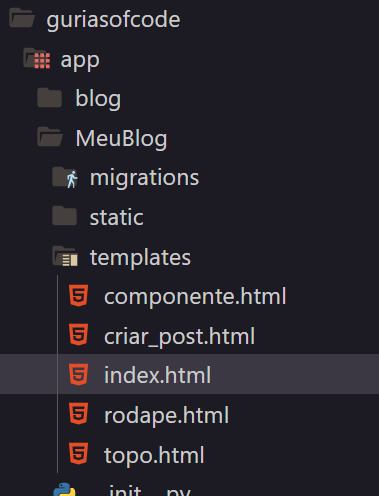
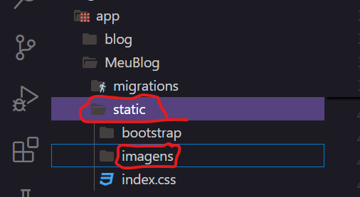

Bem-vindo à área de tutoriais! Aqui você encontrará todos os passos necessários para
desenvolver sua aplicação de forma clara e organizada.
Nossa missão é guiá-lo através de cada etapa, oferecendo dicas, exemplos e recursos úteis
para facilitar seu aprendizado. Os monitores estarão à disposição para esclarecer qualquer
dúvida que você possa ter. Sinta-se à vontade para explorar os conteúdos e colocar a mão na
massa. Vamos juntos transformar suas ideias em realidade!
Fundamentos sobre o Projeto
Neste projeto, você criará um blog que terá funcionalidades como:
Cadastro de posts: Permite que os usuários criem novos artigos para
compartilhar.
Listagem de posts: Mostra todos os posts criados, permitindo que os usuários
naveguem facilmente pelo conteúdo.
Cadastro de comentários: Usuários podem interagir com os posts, deixando suas
opiniões e feedback.
Entendendo Front-end e Back-end
No desenvolvimento de software, os programadores são geralmente divididos em duas categorias:
Front-end e Back-end.
Front-end: É responsável pelo design e estilização da aplicação, ou seja,
por tudo o que o usuário final vê e interage.
Back-end: É responsável pela lógica e pela comunicação com o banco de
dados. Ele lida com a construção de funcionalidades o front-end exibe.
A colaboração entre Front-end e Back-end é essencial para o sucesso do projeto, pois juntos criam uma
experiência de usuário coesa e funcional.
Primeiros Passos
Após extrair a pasta "guriasofcode", siga os passos abaixo para configurar e iniciar o
seu ambiente de desenvolvimento. Não se preocupe, vamos explicar tudo!
1. Abrindo a Pasta no Visual Studio Code
Abra a pasta "guriasofcode" utilizando o Visual Studio Code. Dentro
dessa pasta, você verá vários arquivos que são importantes para o funcionamento do nosso blog. Esses
arquivos formam a base do projeto.
2. Acessando o Terminal Integrado
Agora, precisamos abrir o terminal integrado no Visual Studio Code, que é onde você pode digitar
comandos.
Para abrir o terminal:
Pressione Ctrl + ` (a tecla ao lado do número 1 no teclado) ou Vá até o menu e
clique em Exibir > Terminal.
Veja como fazer isso:
3. Inicializando os Serviços
Agora vamos preparar o ambiente para o seu blog! O próximo comando que você deve digitar no terminal é:
docker-compose up --build
Este comando faz o seguinte:
docker-compose: é uma ferramenta que ajuda a gerenciar múltiplos serviços que o seu
blog precisa.
up: inicializa os serviços.
--build: recria os serviços se houver mudanças, garantindo que tudo esteja
atualizado.
Depois de digitar o comando, pressione Enter no teclado. O terminal começará a carregar
e você verá várias mensagens. Isso significa que o ambiente está sendo configurado corretamente! Após a
execução desse comando, o ambiente estará pronto para uso
4. Abrindo no Navegador
Agora que os serviços estão em funcionamento, é hora de visualizar o seu projeto em ação! Abra o seu
navegador de preferência e insira a seguinte URL na barra de endereços:
"http://127.0.0.1:8000/". Após pressionar Enter, você será direcionado para uma página
simples que exibe o título **"Olá"**. Este será o seu ponto de partida para o desenvolvimento da
estrutura do seu blog.
A partir deste momento, você poderá começar a personalizar o layout, adicionar conteúdo e implementar
todas as funcionalidades que deseja para o seu projeto. Explore as opções de design e comece a construir
um blog que reflita sua visão e estilo!
Para ajudá-lo a visualizar esse processo, assista ao vídeo abaixo, onde mostramos como digitar a URL na
barra de pesquisa do navegador:
Finalmente podemos contruir sua primeira pagina!!
Com o projeto aberto em seu editor de texto, navegue até o arquivo index.html. A imagem
abaixo ilustra a localização desse arquivo dentro da estrutura do projeto:

Esse arquivo será fundamental para definir a estrutura inicial da sua aplicação web.
Dentro do arquivo index.html, você encontrará marcações que guiarão a construção do seu blog. Preste
atenção à seguinte linha de código:
{% include 'topo.html' %}
O comando 'include' indica que o arquivo 'topo.html' está sendo inserido dentro do
'index.html' Isso significa que, para realizar alterações na parte superior do seu blog, você deve
editar o arquivo 'topo.html' Todas as modificações feitas nesse arquivo refletirão
automaticamente no topo de todas as páginas que incluem esse cabeçalho.
Vamos criar um topo para pagina
O topo de uma página é normalmente utilizado para criar uma navegação que ajuda os usuários a se
orientarem dentro do site.
Para implementar essa navegação, adicione o seguinte código dentro do arquivo topo.html:
Após adicionar as novas linhas de código, chegou o momento de ver a mágica acontecer! 🌟
Retorne ao seu navegador, atualize a página e prepare-se para observar as mudanças que você implementou
ganhando vida. Com a nova navegação, seus usuários poderão se mover facilmente entre diferentes seções
do blog, aproveitando uma experiência fluida e intuitiva. Certifique-se de testar cada link e
funcionalidade para garantir que tudo esteja em perfeito funcionamento. Divirta-se explorando o fruto do
seu trabalho! 🚀
Com apenas algumas linhas de código, você conseguiu criar um elemento funcional na página! Isso é
possível graças ao poder do Bootstrap 5, que oferece uma ampla gama de componentes
prontos e responsivos por meio de classes pré-configuradas. As classes do Bootstrap funcionam como
“etiquetas” que adicionam estilos e funcionalidades específicas aos elementos HTML. Por exemplo, a
classe `nav` permite criar barras de navegação modernas e adaptáveis a diferentes tamanhos de tela,
facilitando a construção de menus de forma rápida e eficiente. Explore as possibilidades e veja como o
Bootstrap pode transformar seu projeto em algo incrível com pouco esforço! 🎨✨
Vamos Adicionar a Bio do Seu Grupo no Blog Agora!!
Agora, vamos voltar ao arquivo index.html para criar uma bio para o seu blog, junto com uma mensagem de
boas-vindas. Nesta seção, também aprenderemos como as imagens funcionam dentro do Django.
No Django, a tag {% static %} é uma ferramenta essencial para lidar com arquivos estáticos
como imagens,
folhas de estilo (CSS) e scripts JavaScript. Esses arquivos são servidos diretamente ao navegador e são
importantes
para a aparência e interatividade do seu site.
Arquivos Estáticos
Arquivos estáticos são recursos que não mudam durante a execução do projeto. Isso inclui imagens, CSS e
JavaScript que
ajudam a definir o layout e a funcionalidade do site.
Funcionamento da Tag {% static %}
Ao utilizar a tag {% static 'caminho/para/arquivo' %}, o Django gera o caminho correto para
o arquivo
estático. Essa abordagem garante que, independente do ambiente (local ou produção), o Django sempre
localize os arquivos
corretamente, evitando problemas com URLs relativas.
Exemplo Prático
<img src="{% static 'imagens/imagem.png' %}" alt="Descrição da imagem">
Neste exemplo, estamos usando uma imagem chamada imagem.png localizada na pasta
imagens do diretório de arquivos estáticos.
A imagem padrão pode ser a logo do projeto Gurias of Code, mas você é livre para
substituí-la por qualquer outra imagem.
Gerenciamento de Arquivos Estáticos
Para adicionar ou alterar imagens, basta incluir os arquivos na pasta de estáticos definida no seu
projeto Django. A tag
{% static %} garante que o caminho correto seja sempre usado, mesmo se o projeto for movido
para outro servidor ou ambiente.
Onde as imagens estão no nosso projeto ?
As imagens devem ser armazenadas na pasta correta para que possam ser facilmente acessadas e exibidas em
seu site. Normalmente, você encontrará ou criará uma pasta chamada imagens dentro do diretório de
arquivos estáticos do seu projeto.

Agora iremos criar o layout principal da pagina de posts
No arquivo index.html, vamos adicionar o layout principal da página, onde serão exibidos os
nossos posts. Este layout é fundamental para apresentar suas publicações de forma organizada e atraente.
<!-- Layout para listar posts -->
<div class="container mt-5">
<div class="row row-cols-1 row-cols-md-3 g-4">
{% for post in posts %}
<div class="col">
<div class="card shadow-sm h-100">
<!-- Imagem do Card -->
<img src="{{post.imagem.url}}" class="card-img-top" alt="Imagem 1">
<div class="card-body">
<div class="mb-3">
<!-- Título da Notícia -->
<h2 class="card-title mb-0 h4">
<a class="texto-preto fw-bold text-decoration-none">{{post.titulo}}</a>
</h2>
</div>
<!-- Resumo da Notícia -->
<p class="card-text">{{post.corpo|slice:":60"}}..</p>
</div>
<!-- Footer do Card -->
<div class="card-footer border-top p-4 d-flex justify-content-between align-items-center">
<!-- Data da Publicação -->
<span class="ms-2 fs-7">
<i class="bi bi-calendar3"></i> {{ post.data_criacao|date:"d/m/Y" }}
</span>
<!-- Botão para Acessar a Notícia -->
<a href="{% url 'MeuBlog:detalhar_post' post.id %}" class="btn botao-link roxo">
Ler mais <i class="bi bi-box-arrow-in-up-right"></i>
</a>
</div>
</div>
</div>
{% endfor %}
</div>
</div>
Explicando a utilzação do laço for
Quando utilizamos o comando {% for post in posts %}, estamos entrando em um
"mundo" onde podemos explorar todos os posts que foram cadastrados.
Imagine que cada post é um livro em uma biblioteca, e nosso objetivo é abrir cada um deles para ler suas
histórias.
O loop for nos permite passar por cada "livro" (ou post) dentro de uma coleção chamada posts.
Em termos simples, estamos dizendo: "Para cada post que eu tenho, faça algo com ele."
Acessando Informações:
Dentro desse loop, temos acesso a todas as informações de cada post, como o título, o corpo do texto, a
data de criação, etc.
Assim, podemos exibir esses dados na página de forma organizada e amigável.
Por exemplo, se quisermos mostrar o título de cada post, podemos fazer isso facilmente, como se
estivéssemos lendo os títulos de todos os livros em uma prateleira.
Explicando as Variaveis
No código acima, estamos utilizando uma variável chamada post. Mas o que é uma variável? Pense nela como
uma caixa onde podemos guardar informações. Por exemplo, em um projeto de blog, podemos ter várias
caixas (variáveis) para armazenar informações sobre cada post, como o título, o corpo do texto, a imagem
e a data de criação.
Exemplo:
'post.titulo': É como se tivéssemos uma caixa chamada "título" dentro
da nossa caixa post, que contém o nome do post.
'post.corpo': Aqui temos outra caixa que guarda o conteúdo do post.
'post.imagem.url': Nesta caixa, encontramos o caminho da imagem que será exibida no
card.
Usando as variáveis, conseguimos acessar facilmente as informações armazenadas e exibi-las de maneira
organizada em nosso blog.
Essa abordagem nos permite manipular e exibir dados dinamicamente, proporcionando uma experiência de
usuário mais rica e interativa.
Com essa estrutura, você poderá listar seus posts de forma dinâmica e atrativa, garantindo que os
visitantes do seu blog tenham uma ótima experiência ao navegar pelo conteúdo.
Modificando o Rodapé do Blog
Como você pode notar, ainda temos um arquivo que não foi modificado: o rodape.html. Esse
arquivo é incluído na nossa página principal através da linha:
Depois de ter construído o layout principal da página, é hora de estilizar usando CSS, uma linguagem
projetada para adicionar estilos e efeitos visuais às nossas páginas. O CSS permite que você defina
cores, fontes, espaçamentos e muito mais, transformando um layout básico em uma interface atraente e
envolvente.
Dentro do seu projeto, você encontrará um arquivo chamado index.css. Este arquivo é
responsável por criar
classes que definem diferentes estilos que você pode aplicar aos elementos da sua página. Com isso, você
pode personalizar a aparência do seu blog de forma simples e eficiente.
Adicionando Estilos á navegação
Agora, vamos aplicar uma classe de estilo à barra de navegação (nav). Volte para o arquivo index.html e
localize a seção da navegação. Altere a tag <nav> para incluir a classe navbar,
navbar-expand-lg, fixed, shadow-sm e fundo-roxo, como no exemplo abaixo:
Experimente diferentes combinações de cores e estilos, e veja como essas alterações impactam a aparência
do seu blog. O CSS oferece flexibilidade para que você crie uma interface que seja não apenas funcional,
mas também esteticamente agradável. Divirta-se personalizando seu projeto!
Cadastrando um Post
Com a página aberta em seu navegador utilize o topo de navegação para acessar o link 'Cadastro'
Nesta página você vera um formulário pronto, sua função vai ser cadastrar uma noticia e depois retornar
um feedback para o usuario em sua página principal a 'index.html'
preencha as informações do formulário com algo que deseja compartilhar conosco, esse post sera exibido em
seu blog
Criando uma mensagem para usuários
no arquivo index iremos criar uma mensagem de sucesso quando um post ser cadastrado
adicione o codigo
<!-- Mensagem de sucesso com cadastro -->
{% if messages %}
<div class="alert alert-success alert-dismissible fade show" role="alert">
<strong>
{% for message in messages %}
{{ message }}
{% endfor %}
</strong>
<button type="button" class="btn-close" data-bs-dismiss="alert" aria-label="Close"></button>
</div>
{% endif %}
Condição {% if messages %}:
Verifica se existem mensagens armazenadas na sessão do usuário. O Django armazena mensagens temporárias que podem ser exibidas após uma ação, como o cadastro de um post.
Se a lista de mensagens não estiver vazia, o bloco de código que segue será executado.
:
Cria um alerta que será exibido na página. O Bootstrap utiliza essas classes para estilizar o alerta e garantir que ele tenha uma aparência adequada e responsiva.
alert-dismissible permite que o alerta possa ser fechado pelo usuário.
{% for message in messages %}:
Inicia um loop que itera sobre todas as mensagens disponíveis. Mesmo que, normalmente, você só tenha uma mensagem (por exemplo, "Post cadastrado com sucesso!"), a estrutura permite que você exiba múltiplas mensagens, se necessário.
A mensagem é inserida entre as tags , o que a destaca visualmente.
{{ message }}:
Aqui é onde o conteúdo de cada mensagem é inserido no HTML. Essa variável representa a mensagem que foi armazenada na sessão do usuário.
{% endfor %}:
Marca o final do loop, indicando que não há mais mensagens para processar.